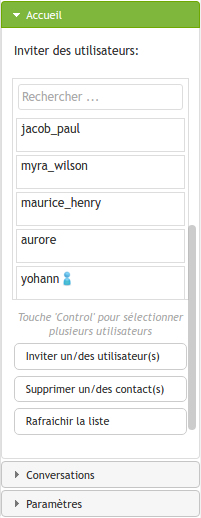

Prototype JSXC / Etherpad / Openfire
Destiné à la découverte d'outils de communication en temps réel.| Nom | Valeur |
|---|
Bienvenue !
Ce site est un espace de démonstration et de développement dédié aux technologies de communication en temps réel. Vous pourrez essayer ici:- JSXC: un client XMPP modifié permettant la messagerie instantanée texte et vidéo
- Etherpad: une solution d'édition en ligne collaborative
- Openfire: un serveur XMPP libre
Connexion
| Chosissez un compte prédéfini: |
|
||
| Ou saisissez le login que vous souhaitez: | |||
Visite guidée
Une fois connecté au client essayez la visite guidée pour découvrir les fonctionnalités offertes:Suggestions / Signalement d'erreurs
N'hésitez pas: http://im.silverpeas.net:9001/p/suggestionsNouveautés ?
Regardez la feuille de route: http://im.silverpeas.net:9001/p/feuille-de-routeAjouter un contact
Pour communiquer avec quelqu'un vous devez d'abord l'ajouter à vos contacts:
Menu > Rechercher "Ajouter" > Ajouter un contact
Discuter
Pour discuter avec quelqu'un, ajoutez le à vos contacts puis cliquez sur son nom à droite de l'écran. Si vous utilisez Chrome ou Firefox vous pouvez essayer de démarer une vidéo conférence. Cliquez sur l'icône en forme de caméra en haut de l'espace de conversation.
Cette fonctionnalité n'est pas encore correctement configurée, les connexions échouent selon la configuration réseau.